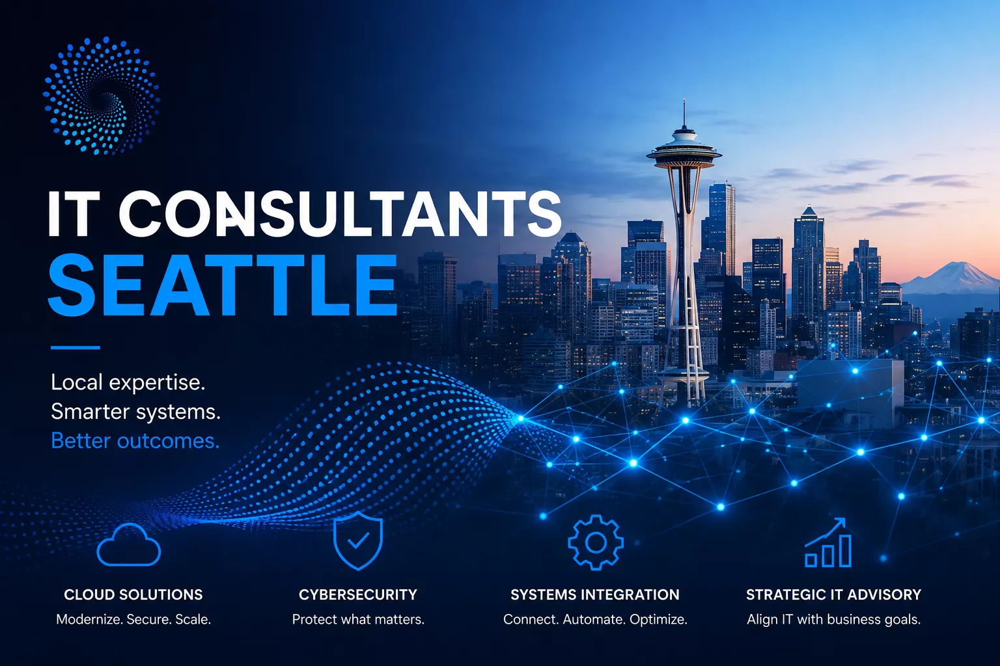

Taliferro is a Seattle-based technology consulting firm that works with business leaders — not just engineers. We diagnose why IT is expensive and slow, fix cloud architecture that's out of control, and give you a clear picture of what your technology actually needs.

We work at the strategy, architecture, and cost level — wherever the real problem is.
A fast, focused assessment of what's wrong with your technology — written, specific, and actionable within 3 days. Starting at $999 flat.
AWS, Azure, and GCP architecture review and redesign. We cut costs, reduce fragility, and make systems easier to scale without breaking the budget.
API consulting for organizations where integrations are breaking, governance is missing, or Apigee isn't delivering expected value.
AI projects that aren't producing results almost always have a data or architecture problem underneath. We find it and fix it.
Line-by-line review of where IT spend is going and what's producing results. We identify what to stop funding and what to fund instead.
When reports contradict each other and nobody trusts the numbers, the problem is structural. We diagnose where data breaks and what to fix first.
Taliferro Group is led by Tyrone Showers, a former AT&T subject matter expert in RESTful API design with over 25 years of enterprise technology experience. We've worked with clients including AT&T, T-Mobile, and Blair Capital Management.
Unlike large consulting firms, we don't staff your project with junior consultants and bill you for their learning curve. You get the same senior expertise on every engagement — fast intake, written deliverables, no retainer required.
Why the bigger payoff is what your team stops spending attention on.
Correctly-configured pieces can still add up to the wrong architecture.
Almost every failure traces back to a skipped basic, not a hard problem.
Diagnoses technology problems — rising cloud costs, slow delivery, security gaps, outdated architecture — and gives leadership a clear written picture of what to fix and in what order.
Hourly IT consulting in Seattle runs $150–$400/hr for independents, $250–$600/hr for firms. Taliferro offers flat-fee assessments starting at $999 — you know the cost before the first call.
No. Every Taliferro engagement is flat-fee and standalone — a single, time-boxed project with a defined deliverable. No retainer, no surprise invoices.
Yes — we serve clients across the US remotely. Most engagements are fully remote. Seattle-area clients can also meet in person at our office on 11th Ave.
Start with a $999 IT Rescue engagement — intake within 24 hours, written diagnosis in 3 days.